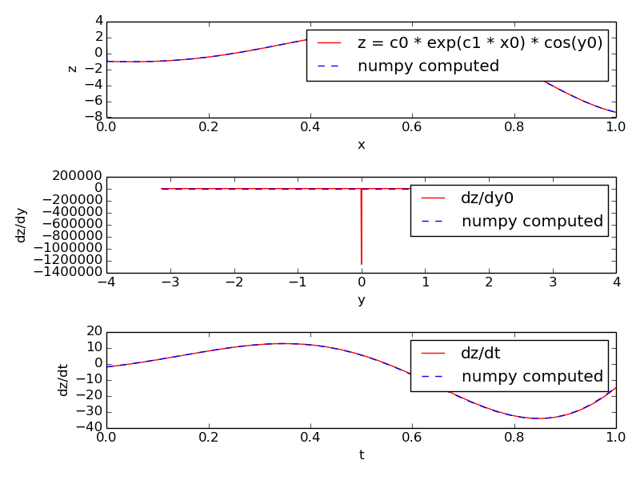

MOOSE Classes¶
- onetoonemsg.main()[source]
Demonstrates one-to-one connection between objects through ''moose.connect''.
- onetoonemsg.test_one_to_one(size=2)[source]
Demonstrates one-to-one connection using the 'connect' function of MOOSE.
Show the message¶
- showmsg.main()[source]
This is to show a 'raw' way of traversing messages.
Single Message Cross¶
- singlemsgcross.main()[source]
This example shows that you can have two ematrix objects and connect individual elements using Single message
- singlemsgcross.test_crossing_single()[source]
This function creates an ematrix of two PulseGen elements and another ematrix of two Table elements.
The two pulsegen elements have same amplitude but opposite phase.
Table[0] is connected to PulseGen[1] and Table[1] to Pulsegen[0].
In the plot you should see two square pulses of opposite phase.
Time¶
Clocks¶
- showclocks.main()[source]
This snippet shows various ways of displaying scheduling information of moose model components.
The /clock/tick ematrix has 10 elements, any of which can be setup by using the moose.setClock(tickNo, dt) function. This sets the interval between the ticking events for it to dt time.
Individual model components can be assigned ticks by moose.useClock(tickNo, targetPath, targetFinfo). Commonly used target finfo is process, which causes the function of the same name in the ematrix at target path to be called at each ticking event of tick tickNo. Thus displaying the neighbors of process finfo of an element will show the tick assigned to it.
On the other hand, the tick ematrix has 10 finfos, proc0 ... proc9 which connect to all the targets of the corresponding tickNo. You can display the neighbors of these finfos also to see what is scheduled on each tick.
Generating Time Data Table¶
Demonstrates the use of TimeTable elements in MOOSE.
This script creates two time tables, #1 is filled with entries in a numpy array and #2 is filled from a text file containing the event times.
The state field of #1, which becomes 1 when an event occurs and 0 otherwise, is recorded.
On the other hand, #2 is connected to a synapse (in a SynChan element) to demonstrate artificial spike event generation.
- timetable.generate_poisson_times(rate=20, simtime=100, seed=1)[source]
Generate Poisson spike times using rate. Use seed for seeding the numpy rng
- timetable.main()[source]
Demonstrates the use of TimeTable elements in MOOSE.
This scripts creates two time tables, #1 is filled with entries in a numpy array and #2 is filled from a text file containing the event times.
The state field of #1, which becomes 1 when an event occurs and 0 otherwise, is recorded.
On the other hand, #2 is connected to a synapse (in a SynChan element) to demonstrate artificial spike event generation.
- timetable.timetable_file(filename='timetable.txt')[source]
Create a TimeTable and populate it from file specified by filename. If filename does not exist, a file of the same name is created and a random series of spike times is saved in it
- timetable.timetable_nparray()[source]
Create a time table and populate it with numpy array. The vec field in a Table can be directly assigned a sequence to fill the table entries.
Vectors¶
- vectors.main()[source]
Demonstrates how to use vectors of moose elements
Data Entries¶
- wildcard.main()[source]
Explore the wildcard search in moose models
Interpolation¶
1-dimentional Interpolation¶
- interpol.main()[source]
Example of Interpol object.
2-dimentional interpolation¶
Example of Interpol object in 2 dimensions.
- interpol2d.interpolation_demo()[source]
Example of Interpol object in 2-dimension.
SymCompartment¶
- symcompartment.main()[source]
This example demonstrats the use of SymCompartment class of MOOSE.
- symcompartment.test_symcompartment()[source]
This example demonstrates the use of SymCompartment class of MOOSE.
Tables¶
- tabledemo.main()[source]
Tablecan be used for recording and saving data in ascii text formats. In this example we create a square-pulse generator object and record the output using a table.The steps are:
Create a PulseGen element pulse.
Set delay[0]=1.0, width[0]=0.2, level[0]=0.5, so it generates 0.2 s wide square pulses with 0.5 amplitude every 1 s.
Create a Table element tab.
Connect the outputValue field of pulse to tab.
We set tick-interval of ticks 0 and 1 to 0.01 and schedule pulse on tick 0 and tab on tick 1.
Run the simulation for 5 s and save data to the ascii file output_tabledemo.csv.
Data Types¶
HDF DataType¶
HDF5 is a self-describing file format for storing large
datasets. MOOSE has an utility HDF5DataWriter for saving
simulations data in HDF5 files.
- hdfdemo.main()[source]¶
In this example
We create a passive neuronal compartment comp.
We create an HDF5DataWriter object hdfwriter for writing to a file
output_hdfdemo.h5. The mode of the HDF5DataWriter is set to 2 which means if a file of the same name exists, it will be overwritten.The membrane voltage Vm and membrane current Im of comp are connected to hdfwriter for recording.
We set some attributes of the datasets and the file.
We run the simulation, hdfwriter records and stores the Vm and Im values over time.
We close the file by calling close() method of hdfwriter.
Running this snippet creates the file
output_hdfdemo.h5which reflects the structure of the model:model | | c[0] | |___im | |___vm
im and vm are datasets containing Im and Vm field values recorded from comp.
NSDF DataType¶
NSDF : Neuroscience Simulation Data Format¶
NSDF is an HDF5 based format for storing data from neuroscience simulation.
This script is for demonstrating the use of NSDFWriter class to dump data in NSDF format.
The present implementation of NSDFWriter puts all value fields
connected to its requestData into
/data/uniform/{className}/{fieldName} 2D dataset - each row
corresponding to one object.
Event data are stored in
/data/event/{className}/{fieldName}/{Id}_{dataIndex}_{fieldIndex}
where the last component is the string representation of the ObjId of
the source.
The model tree (starting below root element) is saved as a tree of
groups under /model/modeltree (one could easily add the fields as
atributes with a little bit of more code).
The mapping between data source and uniformly sampled data is stored
as a dimension scale in /map/uniform/{className}/{fieldName}. That for
event data is stored as a compound dataset in
/map/event/{className}/{fieldName} with a [source, data] columns.
The start and end timestamps of the simulation are saved as file attributes: C/C++ time functions have this limitation that they give resolution up to a second, this means for simulation lasting < 1 s the two timestamps may be identical.
Much of the environment specification is set as HDF5 attributes (which is a generic feature from HDF5WriterBase).
MOOSE is unit agnostic at present so unit specification is not implemented in NSDFWriter. But units can be easily added as dataset attribute if desired as shown in this example.
References
Ray, Chintaluri, Bhalla and Wojcik. NSDF: Neuroscience Simulation Data Format, Neuroinformatics, 2015.
http://nsdf.readthedocs.org/en/latest/
- nsdf.setup_model()[source]¶
Setup a dummy model with a PulseGen and a SpikeGen. The SpikeGen detects the leading edges of the pulses created by the PulseGen and sends out the event times. We record the PulseGen outputValue as Uniform data and leading edge time as Event data in the NSDF file.
- nsdf_vec.main()[source]¶
Example code to dump data from multiple elements in a vector.
In this demo we create a PulseGen vector where each element has a different set of pulse parameters. After saving the output vector directly using MOOSE NSDFWriter we open the NSDF file using h5py and plot the saved data.
You need h5py module installed to run this simulation.
References
Ray, Chintaluri, Bhalla and Wojcik. NSDF: Neuroscience Simulation Data Format, Neuroinformatics, 2015.
http:
//nsdf.readthedocs.org/en/latest/
- nsdf_vec.read_nsdf(fname)[source]¶
Read the specific file we created in this example.
Note that the preferable way of associating source with data is to use the DimensionScale. But since there is one-to-one correspondence between the data rows and the map rows (source path), we are exploiting that here.
- nsdf_vec.write_nsdf()[source]¶
Setup a dummy model with a PulseGen vec and dump the outputValue in NSDF file
PyMoose¶
This is an example showing pymoose implementation of the NaF channel in Traub et al 2005
Author: Subhasis Ray
- traub_naf.create_compartment(parent_path, name)[source]¶
This shows how to use the prototype channel on a compartment.
- traub_naf.create_naf_proto()[source]¶
Create an NaF channel prototype in /library. You can copy it later into any compartment or load a .p file with this channel using loadModel.
This channel has the conductance form:
Gk(v) = Gbar * m^3 * h (V - Ek)
We are using all SI units
- traub_naf.run_clamp(model_dict, clamp, levels, holding=0.0, simtime=0.1)[source]¶
Run either voltage or current clamp for default timing settings with multiple levels of command input.
model_dict: dictionary containing the model components -
vlcamp - the voltage clamp amplifier
iclamp - the current clamp amplifier
model - the model container
data - the data container
inject_tab - table recording membrane
command_tab - table recording command input for voltage or current clamp
vm_tab - table recording membrane potential
clamp: string specifying clamp mode, either voltage or current
levels: sequence of values for command input levels to be simulated
holding: holding current or voltage
Returns: a dict containing the following lists of time series:
command - list of command input time series
inject - list of of membrane current (includes injected current) time series
vm - list of membrane voltage time series
t - list of time points for all of the above
- traub_naf.run_sim(model, data, simtime=0.1, simdt=1e-06, plotdt=0.0001, solver='ee')[source]¶
Reset and run the simulation.
model: model container element
data: data container element
simtime: simulation run time
simdt: simulation timestep
plotdt: plotting time step
solver: neuronal solver to use
- traub_naf.setup_electronics(model_container, data_container, compartment)[source]¶
Setup voltage and current clamp circuit using DiffAmp and PID and RC filter
- traub_naf.setup_model()[source]¶
Setup the model and the electronic circuit. Also creates the data container.
Author: Subhasis Ray
This shows how to use the prototype channel on a compartment.
Create an NaF channel prototype in /library. You can copy it later into any compartment or load a .p file with this channel using loadModel.
This channel has the conductance form:
Gk(v) = Gbar * m^3 * h (V - Ek) We are using all SI units
Turn on current clamp and turn off voltage clamp
Turn on voltage clamp and turn off current clamp
Run either voltage or current clamp for default timing settings with multiple levels of command input.
model_dict: dictionary containing the model components -
vlcamp - the voltage clamp amplifier
iclamp - the current clamp amplifier
model - the model container
data - the data container
inject_tab - table recording membrane
command_tab - table recording command input for voltage or current clamp
vm_tab - table recording membrane potential
clamp: string specifying clamp mode, either voltage or current
levels: sequence of values for command input levels to be simulated
holding: holding current or voltage
Returns: a dict containing the following lists of time series:
command - list of command input time series
inject - list of of membrane current (includes injected current) time series
vm - list of membrane voltage time series
t - list of time points for all of the above
Reset and run the simulation.
model: model container element
data: data container element
simtime: simulation run time
simdt: simulation timestep
plotdt: plotting time step
solver: neuronal solver to use
Setup voltage and current clamp circuit using DiffAmp and PID and RC filter
Setup the model and the electronic circuit. Also creates the data container.
Mathematics with MOOSE¶
Computing an arbitrary function¶
- function.function_example(simtime=1.0)[source]¶
- Function objects can be used to evaluate expressions with arbitrary
number of variables and constants. We can assign expression of the form:
f(t, c0, c1, ..., cM, x0, x1, ..., xN, y0,..., yP )
where c_i's are constants and x_i's and y_i's are variables. The syntax of the expression follows exprtk (https:
//github.com/ArashPartow/exprtk), the C++ library used for parsing and evaluating it.The constants must be defined before setting the expression. This is done by assigning key, value pairs to the lookup field c.
The identifier t represents simulated time. This is always taken from the clock ticks associated with the function object.
Function differentiates variables based on how their values are obtained. There are two arrays of variables: x and y.
The field element x has an 'input' destination field in every entry. You can connect any source field sending out double to this field. Thus values of x variables are 'pushed' by source objects.
If
allowUnknownVariablesfield is False, then field element entry x[i] corresponds to 'xi' in expr. If allowUnknowVariables field is True, then identifiers not defined as a constant are treated as variable.Among these, those that are not of the form 'yi', where i is a nonnegative integer, are stored in the
xarray. The index i can be looked up in thexindexfield. index = function.xindex[v] will give the index of the variable 'v' in expr.
If you want to include a value field field of another element as a variable, you must use an identifier of the form 'yi' for it in the expression, and connect the requestOut source field of the function element to the get{Field} destination field on the target element. Thus values for y variables are 'pulled' from the target element field.
The y-index follows the sequence of connection, starting with 0. Thus, if you call:
`moose.connect(function, 'requestOut', a, 'getSomeField')` `moose.connect(function, 'requestOut', b, 'getAnotherField')`
then
a.someFieldwill be assigned toy0andb.anotherFieldwill be assigned toy1.In this example we evaluate the expression:
Q * exp(-t / tau) + stim + cos(y0)
where tau is a constant, Q is pushed from a
PulseGenobject, stim is pushed from aStimulusTable, andy0is pulled from anotherStimulusTableobject.Along with the value of the expression itself we also compute its derivative with respect to 'y0' and its derivative with respect to time (rate).
Note that Function elements are assigned a slow clock tick by default, hence we need to update the dt of the clock using
moose.setClockfunction to that of its input elements. Also notice the blip at the onset.
Function objects can be used to evaluate expressions with arbitrary number of variables and constants. We can assign expression of the form:
f(c0, c1, ..., cM, x0, x1, ..., xN, y0,..., yP )
where c_i's are constants and x_i's and y_i's are variables.
The constants must be defined before setting the expression and variables are connected via messages. The constants can have any name, but the variable names must be of the form x{i} or y{i} where i is increasing integer starting from 0.
The x_i's are field elements and you have to set their number first (function.x.num = N). Then you can connect any source field sending out double to the 'input' destination field of the x[i].
The y_i's are useful when the required variable is a value field and is not available as a source field. In that case you connect the requestOut source field of the function element to the get{Field} destination field on the target element. The y_i's are automatically added on connecting. Thus, if you call:
moose.connect(function, 'requestOut', a, 'getSomeField')
moose.connect(function, 'requestOut', b, 'getSomeField')
then a.someField will be assigned to y0 and b.someField will be assigned to y1.
In this example we evaluate the expression: z = c0 * exp(c1 * x0) * cos(y0)
with x0 ranging from -1 to +1 and y0 ranging from -pi to +pi. These values are stored in two stimulus tables called xtab and ytab respectively, so that at each timestep the next values of x0 and y0 are assigned to the function.
Along with the value of the expression itself we also compute its derivative with respect to y0 and its derivative with respect to time (rate). The former uses a five-point stencil for the numerical differentiation and has a glitch at y=0. The latter uses backward difference divided by dt.
Unlike Func class, the number of variables and constants are unlimited in Function and you can set all the variables via messages.
{kind=link}

Harmonic Oscillatory Function¶
- funcRateHarmonicOsc.main()[source]¶
funcRateHarmonicOsc illustrates the use of function objects to directly define the rates of change of pool concentration. This example shows how to set up a simple harmonic oscillator system of differential equations using the script. In normal use one would prefer to use SBML.
The equations are
p' = v - offset1 v' = -k(p - offset2)
where the rates for Pools p and v are computed using Functions. Note the use of offsets. This is because MOOSE chemical systems cannot have negative concentrations.
The model is set up to run using default Exponential Euler integration, and then using the GSL deterministic solver.
Lotka-Voltera Model¶
- funcReacLotkaVolterra.main()[source]¶
The funcReacLotkaVolterra example shows how to use function objects as part of differential equation systems in the framework of the MOOSE kinetic solvers. Here the system is set up explicitly using the scripting, in normal use one would expect to use SBML.
In this example we set up a Lotka-Volterra system. The equations are readily expressed as a pair of reactions each of whose rate is governed by a function:
x' = x( alpha - beta.y ) y' = -y( gamma - delta.x )
This translates into two reactions:
x ---> z Kf = beta.y - alpha y ---> z Kf = gamma - delta.x
Here z is a dummy molecule whose concentration is buffered to zero.
The model first runs using default Exponential Euler integration. This is not particularly accurate even with a small timestep. The model is then converted to use the deterministic Kinetic solver Ksolve. This is accurate and faster.
Note that we cannot use the stochastic GSSA solver for this system, it cannot handle a reaction term whose rate keeps changing.
- stochasticLotkaVolterra.main()[source]¶
The stochasticLotkaVolterra example is almost identical to the funcReacLotkaVolterra. It shows how to use function objects as part of differential equation systems in the framework of the MOOSE kinetic solvers. Here the difference is that we use a a stochastic solver. The system is interesting because it illustrates the instability of Lotka-Volterra systems in stochastic conditions. Here we see exctinction of one of the species and runaway buildup of the other. The simulation has to be halted at this point.
Here the system is set up explicitly using the scripting, in normal use one would expect to use SBML.
In this example we set up a Lotka-Volterra system. The equations are readily expressed as a pair of reactions each of whose rate is governed by a function:
x' = x( alpha - beta.y ) y' = -y( gamma - delta.x )
This translates into two reactions:
x ---> z Kf = beta.y - alpha y ---> z Kf = gamma - delta.x
Here z is a dummy molecule whose concentration is buffered to zero.
The model first runs using default Exponential Euler integration. This is not particularly accurate even with a small timestep. The model is then converted to use the deterministic Kinetic solver Ksolve. This is accurate and faster.
Note that we cannot use the stochastic GSSA solver for this system, it cannot handle a reaction term whose rate keeps changing.
Vary Concentration with mathematical function¶
- funcInputToPools.main()[source]¶
This example describes the special (and discouraged) use case where functions provide input to a reaction system. Here we have two functions of time which control the pool # and pool rate of change, respectively:
number of molecules of a = 1 + sin(t) rate of change of number of molecules of b = 10 * cos(t)
In the stochastic case one must set a special flag useClockedUpdate in order to achieve clock-triggered updates from the functions. This is needed because the functions do not have reaction events to trigger them, and even if there were reaction events they might not be frequent enough to track the periodic updates. The use of this flag slows down the calculations, so try to use a table to control a pool instead.
To run in stochastic mode:
>>> python funcInputToPools.py
To run in deterministic mode:
>>> python funcInputToPools.py false